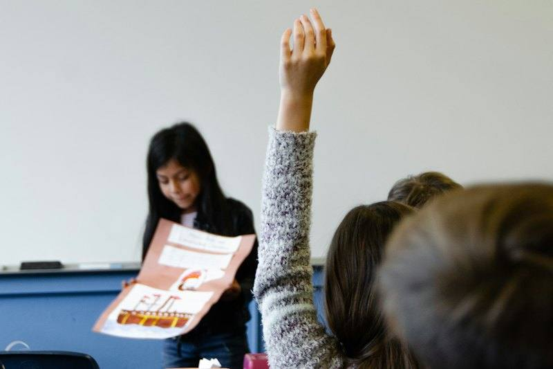

Unterrichtseinheit
90Min.
Hate Speech erkennen und kontern
Doppelstunde mit entschärften Beispielkommentaren: Merkmale von Hassrede, die Grenze zur Strafbarkeit und Gegenrede-Strategien zum Ausprobieren.
Hassrede trifft Einzelne – und meint oft ganze Gruppen. Wie man sie erkennt, ihr widerspricht, ohne sich selbst zu gefährden, und wann man sie anzeigen kann.

Hate Speech wertet Menschen wegen einer Gruppenzugehörigkeit ab – etwa wegen Herkunft, Hautfarbe, Religion, Geschlecht, sexueller Orientierung oder Behinderung. Sie richtet sich zwar oft gegen eine Person, meint aber alle, die zu dieser Gruppe gezählt werden. Das macht sie so verletzend – und so gefährlich für das Miteinander.
Hass wird häufig als Ironie, „Meme“ oder „Ich sag ja nur …“ getarnt. Manchmal steckt eine koordinierte Gruppe dahinter, die viele Kommentare gleichzeitig postet, damit es nach Mehrheit aussieht.
Plattformen zeigen bevorzugt, was viele Reaktionen auslöst – und Wut erzeugt Reaktionen. Jede Antwort, jedes Teilen, sogar ein empörtes Zitat kann einen Hasskommentar sichtbarer machen. Deshalb gilt: Hass nicht teilen, auch nicht, um sich darüber aufzuregen.

Gegenrede will Hater:innen selten bekehren. Sie richtet sich an die stillen Mitlesenden und an die Betroffenen: Ihr seid nicht allein, das hier ist nicht normal.
Nicht jede verletzende Meinung ist strafbar. Infrage kommen unter anderem Beleidigung (§ 185 StGB), verhetzende Beleidigung (§ 192a StGB), Bedrohung (§ 241 StGB), Volksverhetzung (§ 130 StGB) und das Verwenden von Kennzeichen verfassungswidriger Organisationen (§ 86a StGB). Seit dem Digital Services Act der EU müssen Plattformen leicht erreichbare Meldewege anbieten und Meldungen bearbeiten.
Unterrichtseinheit
90Min.
Doppelstunde mit entschärften Beispielkommentaren: Merkmale von Hassrede, die Grenze zur Strafbarkeit und Gegenrede-Strategien zum Ausprobieren.
Podcast
15Min.
Eine junge Creatorin erzählt, wie sie einen Shitstorm erlebt hat, was sie gelähmt hat und was ihr wirklich geholfen hat.
Workshop
3Std.
Halbtägiger Workshop für Jugendarbeit und Schulsozialarbeit: Haltung zeigen, ohne sich selbst zur Zielscheibe zu machen.